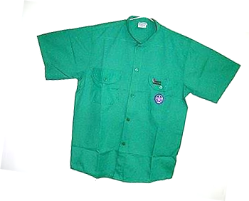

DE QUÉ SE TRATA
TERMINOS DE FUNCIONAMIENTO
FORMAS Y DOCUMENTOS
Cada miembro del Grupo, está invitado a ahorrar semanalmente, la cantidad de dinero que desee.
Esto es de manera voluntaria y no existe un monto mínimo. El dinero ahorrado será solo para el uso del propio ahorrista.
Se emitirá una libreta (pagada por el ahorrista), con un número de cuenta; donde se anotará cada operación (depósito o retiro).
El Grupo debe llevar un respaldo por si el joven extravía su libreta, en cuyo caso deberá cancelar el costo de la nueva libreta que se le de.
El dinero ahorrado solo podrá ser utilizado para el registro anual, compra de uniformes y actividades Scouts.
En caso de actividades distritales o regionales, el grupo entregará un pagaré que luego cajeará con los organizadores del evento.
A partir de este momento se elimina el de cobro de cuotas del Grupo, y se sustituye por este sistema que consideramos más justo y equilibrado.
No será obligatorio... Para los miembros que decidan NO sumarse al Banco, queda entendido que solventarán por su parte, y de manera pertinente, los pagos correspondientes al registro anual y actividades scouts.
Los miembros del Grupo que sean menores de edad, deberán contar con la autorización de sus padres y representantes para participar en este plan. Esta autorización deberá ser por escrito (Descargar modelo de autorización).
* Este reglamento es sólo una idea, una sugerencia, cada Grupo debe adaptarlo a sus propias necesidades.